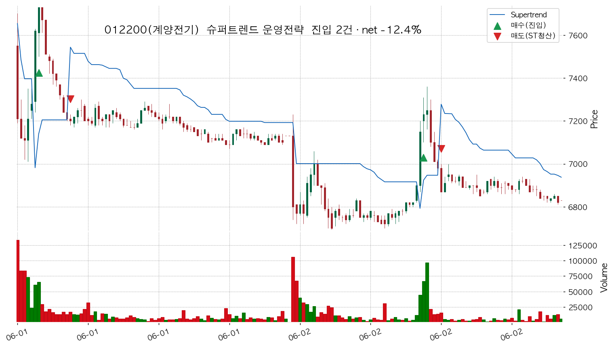
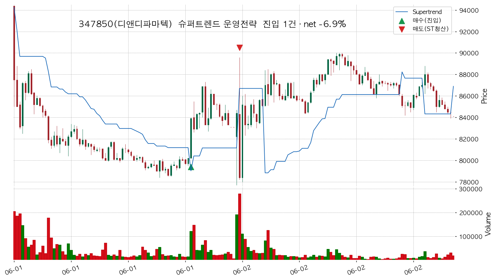
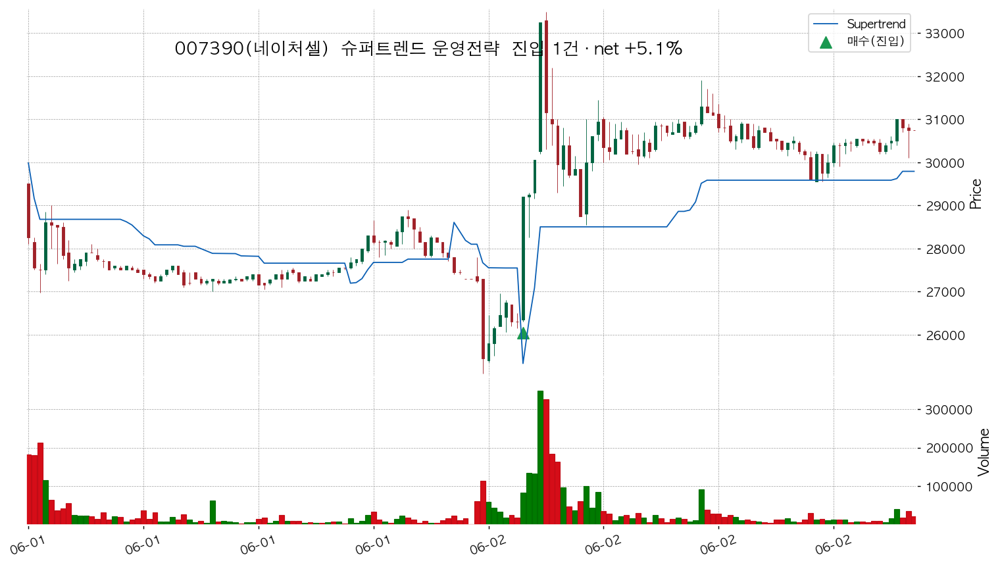
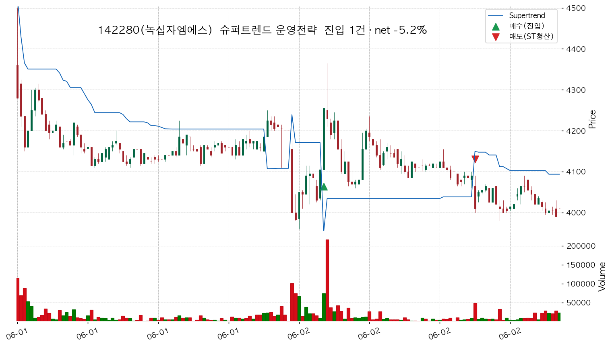
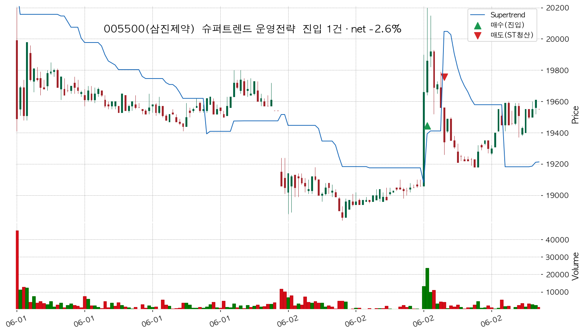
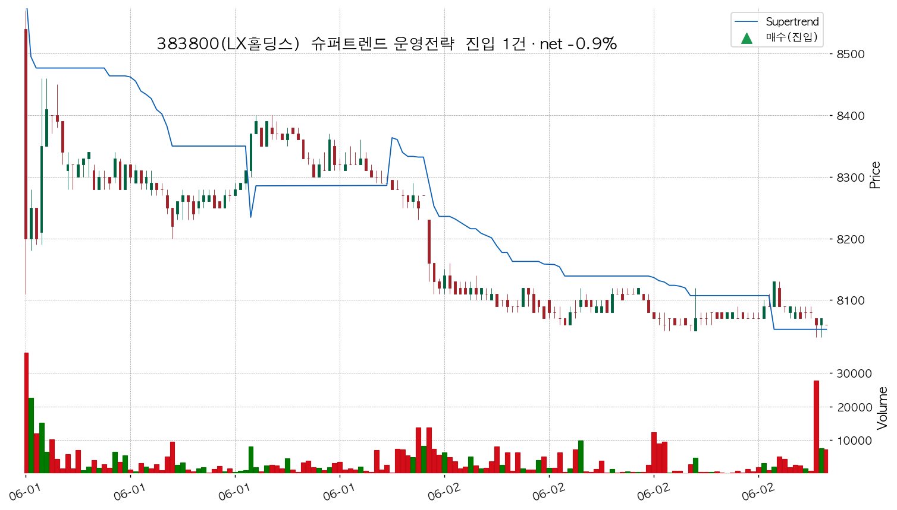

| 지표 | Baseline (RSI off) | RSI확인 (ST AND 10m 교합) |
|---|---|---|
| 진입 건수 | 7건/6종목 | 3건/3종목 |
| 승/패 | 1승6패 | 1승2패 |
| 승률 | 14.3% | 33.3% |
| 거래당 평균 | -3.27% | -2.77% |
| 합산(등가중) | -22.89% | -8.31% |
| 8% 균등 포트폴리오(단리) | -1.83% | -0.67% |
📊 2026-06: 합산 -22.9% → -8.3% (Δ+14.6%pt), 진입 7→3건. 추세 국면에서 상위TF RSI 확인이 거짓전환을 걸러 거래의 질을 높임(하락국면 6월과 반대 — 국면 의존적).
| 종목 | 진입신호 @체결 | 청산신호 @체결(사유) | 보유 | 진입ADX | 순손익% | 결과 |
|---|---|---|---|---|---|---|
| 012200(계양전기) | 06-01 09:30 @7,730 | 06-01 10:15 @7,190 (ST SELL) | 9봉 | 25 | -7.20% | ❌ |
| 012200(계양전기) | 06-02 12:05 @7,230 | 06-02 12:30 @6,870 (ST SELL) | 5봉 | 25 | -5.19% | ❌ |
| 347850(디앤디파마텍) | 06-01 14:10 @84,000 | 06-02 09:05 @78,400 (ST SELL) | 17봉 | 28 | -6.88% | ❌ |
| 007390(네이처셀) | 06-02 09:40 @29,200 | 기간말보유 @30,750 | 67봉 | 28 | +5.10% | ✅ |
| 142280(녹십자엠에스) | 06-02 09:45 @4,250 | 06-02 13:20 @4,040 (ST SELL) | 43봉 | 28 | -5.15% | ❌ |
| 005500(삼진제약) | 06-02 12:35 @19,890 | 06-02 13:00 @19,410 (ST SELL) | 5봉 | 26 | -2.62% | ❌ |
| 383800(LX홀딩스) | 06-02 14:30 @8,120 | 기간말보유 @8,060 | 9봉 | 30 | -0.95% | ❌ |
※ 종목별 차트는 거래영향(|순손익 합|) 상위 6종목만 수록(전체 3종목 거래는 §2 표 참조). 월 단위 5분봉이라 캔들이 조밀할 수 있음.

| 진입신호 | 진입체결가 | 청산신호 @체결(사유) | 보유 | 진입ADX | 순손익% | 결과 |
|---|---|---|---|---|---|---|
| 06-01 09:30 @7,730 | 06-01 10:15 @7,190 (ST SELL) | 9봉 | 25 | -7.20% | ❌ | |
| 06-02 12:05 @7,230 | 06-02 12:30 @6,870 (ST SELL) | 5봉 | 25 | -5.19% | ❌ |

| 진입신호 | 진입체결가 | 청산신호 @체결(사유) | 보유 | 진입ADX | 순손익% | 결과 |
|---|---|---|---|---|---|---|
| 06-01 14:10 @84,000 | 06-02 09:05 @78,400 (ST SELL) | 17봉 | 28 | -6.88% | ❌ |

| 진입신호 | 진입체결가 | 청산신호 @체결(사유) | 보유 | 진입ADX | 순손익% | 결과 |
|---|---|---|---|---|---|---|
| 06-02 09:40 @29,200 | 기간말보유 @30,750 | 67봉 | 28 | +5.10% | ✅ |

| 진입신호 | 진입체결가 | 청산신호 @체결(사유) | 보유 | 진입ADX | 순손익% | 결과 |
|---|---|---|---|---|---|---|
| 06-02 09:45 @4,250 | 06-02 13:20 @4,040 (ST SELL) | 43봉 | 28 | -5.15% | ❌ |

| 진입신호 | 진입체결가 | 청산신호 @체결(사유) | 보유 | 진입ADX | 순손익% | 결과 |
|---|---|---|---|---|---|---|
| 06-02 12:35 @19,890 | 06-02 13:00 @19,410 (ST SELL) | 5봉 | 26 | -2.62% | ❌ |

| 진입신호 | 진입체결가 | 청산신호 @체결(사유) | 보유 | 진입ADX | 순손익% | 결과 |
|---|---|---|---|---|---|---|
| 06-02 14:30 @8,120 | 기간말보유 @8,060 | 9봉 | 30 | -0.95% | ❌ |
본 문서는 시뮬레이션 분석이며 실거래 송출이 아닙니다.